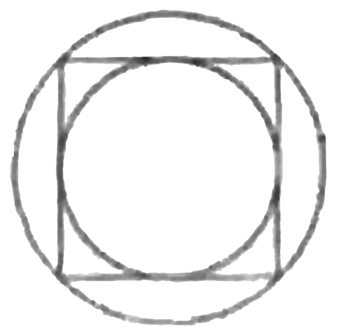
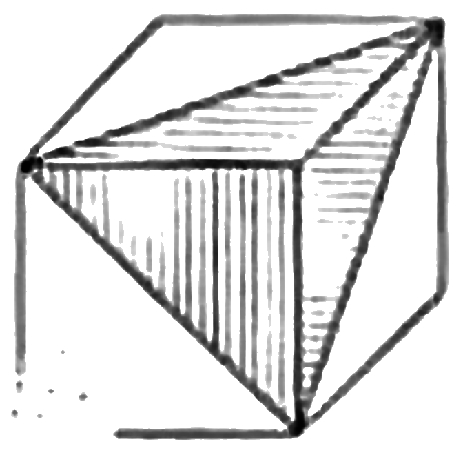

מספר השקנאים באגמון החולה גדל בכל שנה פי 3. אם בתחילת שנת 2000 היו באגמון 8 שקנאים, כמה שקנאים יהיו באגמון לאחר x שנים?
כמה מספרים תלת־ספרתיים קיימים בהם ספרת המאות קטנה מ־5, ספרת העשרות גדולה מ־5 והם מתחלקים ב־2?

בסרטוט שלפניכם מעגל החסום בריבוע החסום במעגל. נתון כי רדיוסו של המעגל הקטן הוא r.
על פי נתונים אלו ונתוני הסרטוט, השטח האפורהשטח הלבן = ?
⚠ השברים קטנים מאוד – נקראו בקירוב; יש לבדוק בספר (עמוד 131).
נתון: 6x − 3 ≤ 0 , 4y − 8 ≥ 0
מהו ערכו המינימלי של הביטוי (xy)²?
ממוצע הגילאים של בני ואלי שווה ל־A, ממוצע הגילאים של בני ונגדי שווה ל־B, ממוצע הגילאים של אלי ונגדי שווה ל־C. איזה מהביטויים הבאים מתאר את גילו של בני?
√20 + 3x − √9x² + 24x + 16 = ?⚠
נתון: (5ᵃ)ᵇ = (5a²5−b²) · 52ab⚠
מה מהבאים נכון בהכרח?

בסרטוט שלפניכם קובייה שאורך מקצועה הוא 2 ס"מ. גל העביר שלושה אלכסונים על פאותיה של הקובייה ואז ניסר את הקובייה לאורכם.
מה נפחו של הגוף (בסמ"ק) שנותר לאחר שגל הסיר מהקובייה את החלק שהוא ניסר (החלק המקווקו)?
לכל מספר n הגדול מ־2 הוגדרה הפעולה $ כך: ההפרש בין גודלה של הזווית הפנימית במצולע משוכלל בעל n צלעות לבין הזווית המרכזית באותו המצולע.
איזה מהביטויים הבאים מתאר נכונה את הפעולה $(n)?

בסרטוט שלפניכם מסילה מעגלית שמרכזה O. כדור מסתובב, במהירות קבועה, ללא הפסקה על גבי המסילה.
מה מהבאים נכון בהכרח?